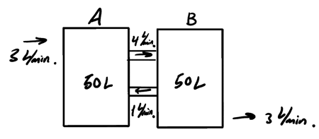

Systems of Differential Equations
Table of Contents
1. Notation
Say we have a system of differential equations, with \(x_1\) and \(x_2\) functions like so:
\begin{align} x'_1 &= ax_1 + bx_2 \notag \\ x'_2 &= cx_1 + dx_2 \notag \end{align}We can write this system as a matrix equation:
\begin{align} \begin{bmatrix} x_1 \\ x_2 \end{bmatrix}' = \begin{bmatrix}a & b \\ c & d\end{bmatrix}\begin{bmatrix}x_1 \\ x_2\end{bmatrix} \notag \end{align}More generally, say we have a vector of functions \(x(t) = \begin{bmatrix} x_1(t) \\ x_2(t) \\ \vdots \\ x_n(t)\end{bmatrix}\). Then, we can write the system of differential equations in \(x(t)\) as:
\begin{align} x'(t) = A(t)x(t) + f(t) \end{align}where \(x'(t)\), \(x(t)\), and \(f(t)\) are \(n \times 1\) vectors, and \(A(t)\) is a \(n \times n\) coefficient matrix. If \(f(t) = 0\), then this system is homogenous; otherwise it is nonhomogenous. If \(A(t)\) are all constants, then it has constant coefficients.
2. Real Eigenvalues
The case when the system of differential equations is known as homogenous and with constant coefficients is when \(A(t)\) has only constant entries and \(f(t)=0\). Then, we can write (1) as:
\begin{align} x'(t) = Ax(t) \end{align}Say \(A\) has real eigenvalue \(\lambda\) with corresponding eigenvector \(w=\begin{bmatrix}w_1 \\ w_2 \\ \vdots \\ w_n\end{bmatrix}\). Then the following is a solution to \(x'(t)=Ax(t)\):
\begin{align} x(t) = Ce^{\lambda t}w \end{align}This result is apparent if we calculate both sides of the equation separately:
\begin{align} Ax(T) &= A\left(Ce^{\lambda t}w\right) = Ce^{\lambda t}(Aw) = Ce^{\lambda t} \cdot \lambda w \notag \\ x'(t) &= C\lambda e^{\lambda t}w = Ce^{\lambda t} \cdot \lambda w \notag \end{align}The general solution, then is all the linear combinations of the particular solutions formed from the eigenvalues of \(A\) and its corresponding eigenvectors. More specifically, if \(A\) has real eigenvalues \(\lambda_1, \lambda_2, \dots, \lambda_n\) (not necessarily distinct) with corresponding \(n\) linearly independent eigenvectors \(v_1, v_2, \dots, v_n\), then the general solution to the system is:
\begin{align} \sum_{j=1}^{n} c_je^{\lambda_j t}v_j \end{align}We can also write this as an \(n \times n\) matrix, called the fundamental matrix:
\begin{align} \begin{bmatrix} \: \\ e^{\lambda_1 t}v_1 & e^{\lambda_2 t}v_2 & \cdots & e^{\lambda_n t}v_n \\ \: \end{bmatrix} \end{align}Example: Mixing two tanks
Consider a tank \(A\), with the amount of salt in the tank given by the function \(x_1(t)\), and another tank \(B\), with the amount of salt given by \(x_2(t)\):

Pure water flows into tank \(A\) at a rate of \(3\) liters per minute, whereas mixed water flows out of tank \(B\) at the same rate. Furthermore, each tank mixes with each other at the rates shown in the figure above. We want to set up a system of equations that allow us to determine what the functions \(x_1(t)\) and \(x_2(t)\) are.
To do this, we note that \(x_1'(t)\) and \(x_2'(t)\) are the rates of change in salt content in each tank are, which can be attributed to the flow. Then, we can set up the following system of differential equations:
\begin{align} x_1' &= -\frac{4}{50}x_1 + \frac{1}{50}x_2 \notag \\ x_2' &= \frac{4}{50}x_1 - \frac{4}{50}x_2 \notag \end{align}3. Nonreal Eigenvalues
We want to solve the system of differential equations \(x'(t) = Ax(t)\) when \(A\) has nonreal eigenvalues \(\alpha \pm \beta i\), with \(\beta \neq 0\). Say \(a+bi\) is the corresponding eigenvector for \(\alpha + \beta i\), where \(a\) and \(b\) are vectors. Then, by (3), the following is a solution:
\begin{align} e^{(\alpha + \beta i)t}(a+bi) \notag \end{align}However, as in the case with two nonreal roots, we don't want the imaginary part in our solution. If we call our solution \(w(t) = w_1(t) + w_2(t)i\), where \(w_1\) and \(w_2\) are real functions, we see that:
\begin{align} w'(t) = w_1'(t) + w_2'(t)i = Aw_1(t) + Aw_2(t)i = Aw(t) \notag \end{align}If we compare the real and imaginary parts, we get:
\begin{align} w_1'(t) &= Aw_1(t) \notag \\ w_2'(t) &= Aw_2(t) \notag \end{align}This means that \(w_1\) and \(w_2\) are precisely the two real solutions that we want. Using Euler's formula to expand \(w(t)\), we find that the two solutions are:
\begin{align} w_1(t) &= e^{\alpha t}\left[\cos(\beta t)a - \sin(\beta t)b\right] \\ w_2(t) &= e^{\alpha t}\left[\cos(\beta t)b + \sin(\beta t)a\right] \end{align}Note that using the conjugate eigenvalue will yield the same solutions.
4. Generalized Eigenvectors
Sometimes, when we have repeated eigenvalues, those do not yield enough eigenvectors to solve the linear system. In these cases, we "relax" the rules for eigenvectors a bit, such that we can find what is called generalized eigenvectors.
For a particular eigenvalue \(\lambda\) with an eigenvector \(\mathbf{v}\), we can find a generalized eigenvector \(\mathbf{w}\) by solving the equation:
\begin{align} (A-\lambda I)\mathbf{w} = \mathbf{v} \end{align}Then, the general solution would be:
\begin{align} x(t) = c_1e^{\lambda t}\mathbf{v} + c_2e^{\lambda t}(t\mathbf{v} + \mathbf{w}) \end{align}